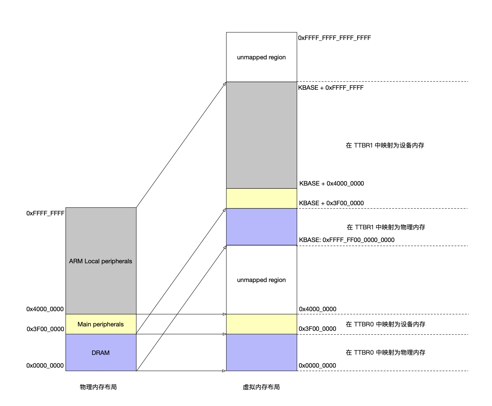

操作系统 SJTU 版(2)：内存管理
Last updated on November 20, 2025 am
这是《操作系统》SJTU-CS3601 课程的课程笔记系列。本文整理部分为“第 2 部分：内存管理”。
Lecture 5: 内存地址翻译
内存管理
- 地址映射：由 CPU 中的 MMU（Memory Management Unit）将虚拟地址翻译为物理地址，由操作系统配置如何翻译
- 分页机制：虚拟页和物理页的页长相等
- 虚拟地址（VA）：虚拟页偏移（VPO）+ 虚拟页号（VPN）
- 物理地址（PA）：物理页偏移（PPO）+ 物理页号（PPN）
- 页表：记录虚拟页号到物理页号的映射
- 每个进程一张页表，操作系统也有一张页表
- 包含多个页表项，存储物理页的页号（虚拟页号为索引）
- 存储在物理内存中，由 OS 负责维护
- 其起始地址存放在页表基地址寄存器中
- 分页机制的特点：
- 物理内存离散分配
- 任意虚拟页可以映射到任意物理页
- 大大降低对物理内存连续性的要求
- 主存资源易于管理，利用率更高
- 按照固定页大小分配物理内存
- 能大大降低外部碎片和内部碎片
- 物理内存离散分配
多级页表
- 多级页表的优点：能有效压缩页表的大小
- 原因：允许页表中出现空洞
- 若某个页表页中的某个页表项为空，那么其对应的下一级页表页便无需存在
- 应用程序的虚拟地址空间大部分都未分配
- 原因：允许页表中出现空洞
- 页表格式：AARCH64 体系结构下 4 级页表
- 每个页表页占用一个 4K 物理页
- 每个页表项占用 8 个字节，每个页表页有 512 个页表项
- 64 位虚拟地址解析:
- [63:48] 16-bit：必须全 0 或全 1
- 一般应用程序地址是 0，内核地址是 1
- 意味着虚拟地址空间大小最大是 Byte，即 256 TB
- [47:39] 9-bit：0 级页表索引
- [38:30] 9-bit：1 级页表索引
- [29:21] 9-bit：2 级页表索引
- [20:12] 9-bit：3 级页表索引
- [11:0] 12-bit：页内偏移
- [63:48] 16-bit：必须全 0 或全 1
- 页表基地址寄存器：AARCH64 有两个页表基地址寄存器：TTBR0_EL1 和 TTBR1_EL1
- MMU 根据虚拟地址第 63 位选择使用哪一个
- 以 Linux 为例，应用程序（地址首位为 0）使用 TTBR0_EL1，操作系统（地址首位为 1）使用 TTBR1_EL1
- 页表使能：
- 机器上电会先进入物理寻址模式，系统软件需配置控制寄存器使能页表从而进入虚拟寻址模式
- AARCH64 在 SCTLR_EL1 第 0 位（M 位）置 1，即在 EL0 和 EL1 权限级使能页表
页表项
- 页表页：
- 每级页表有若干离散的页表页，每个页表页占用一个物理页
- 第 0 级页表有且仅有一个页表页，页表基地址寄存器存储的就是该页的物理地址
- 每个页表页中有 512 个页表项，每项为 8 个字节，用于存储物理地址和权限
- 页表项中的属性位：
- 页描述符 / 表描述符：PFN，即物理页号
- 页描述符指向 4K 页，表描述符指向下一级页表
- 有效位(V)：有效位，当访问时 V=0，则触发缺页异常
- 对于 3 级页表项，还有各种权限位、访问位、脏位等
- 页描述符 / 表描述符：PFN，即物理页号
- 大页：中间级的页表项也能够直接指向物理页
- 块描述符：指向大页
- 有效的 0-2 级页表项，第 1 位为 0 表示 PFN 指向大页，第 1 位为 1 表示 PFN 指向下一级页表
TLB：缓存页表项
- 多级页表的优缺点：用时间换空间
- 优点：压缩页表大小
- 缺点：增加了访存次数（逐级查询）
- TLB：Translation Lookaside Buffer
- 位于 CPU 内部，是页表的缓存
- 缓存了虚拟页号到物理页号的映射关系
- 在地址翻译过程中，MMU 首先查询 TLB
- TLB 命中：不再查询页表，可以减少查询页表带来的访存次数
- TLB 不命中：再查询页表，会导致额外的访存
- TLB 查询：
- 虚拟页号分为 TLBI（TLB index）+ TLBT（TLB tag）
- 先用 index 找到一个 set，再对比其中 entry 的 tag
- TLB 刷新：当 OS 切换进程页表时，TLB 需要全部刷新
- 在用户和内核之间切换时，不需要刷新 TLB
- 降低 TLB 刷新的开销：ASID（Address Space ID）
- OS 为不同进程分配 8 位或 16 位 ASID
- OS 负责将 ASID 填写在 TTBR0_EL1 的高 8 位或高 16 位
- TLB 的每一项也会缓存 ASID
- 地址翻译时，硬件会将 TLB 项的 ASID 与 TTBR0_EL1 的 ASID 对比
- 使用了 ASID 之后，切换页表（即切换进程）后，不再需要刷新 TLB，提高性能
- 修改页表映射后，仍需刷新 TLB
- OS 为不同进程分配 8 位或 16 位 ASID
- TLB 与多核：OS 修改页表后，需要根据进程调度信息，刷新其它核的 TLB
小结：虚拟内存机制的优势
- 高效使用物理内存：使用 DRAM 作为虚拟地址空间的缓存
- 简化内存管理：每个进程看到的是统一的线性地址空间
- 更强的隔离与更细的权限控制：
- 一个进程不能访问属于其他进程的内存
- 用户程序不能够访问特权更高的内核信息
- 不同内存页的读、写、执行权限可以不同
- 可在不同进程之间共享内存（不同虚拟地址空间的虚拟内存页映射到相同的物理页）
Lecture 6: 系统初始化
启动过程与系统初始化
- 从计算机上电到内核开始运行：
-
- 上电后，开始执行 BIOS ROM 中的代码（早期设备）
- 自检，然后找到第一个可启动设备（如第一块磁盘）
- 将可启动设备的第一个块加载到内存固定地址中
- 跳转到 bootloader 的内存地址并继续执行
-
- bootloader 开始执行
- 将内核的二进制文件从启动设备加载到内存中
- 若内核文件是压缩包，则对其进行解压
- 跳转到（解压后的）内核加载地址（物理地址）并继续执行
-
- 内核代码开始执行
-
- 内核启动的 3 个主要任务：
- 设置 CPU 异常级别（特权级别）为 EL1
- 设置页表并开启虚拟内存机制
- 设置异常向量表
物理地址空间
- 物理地址空间：系统总线地址空间
- 系统总线连接内存，也连接其他设备，每个设备都占一块地址空间
课程实验内核启动
-
内核的加载：bootloader 将内核代码放在某一低地址处，该地址由内核在编译时显式给出
-
内核运行的初始代码：
- 设置当前 EL 为 EL1
- 设置启动时用的栈，跳转到 C 代码
- 初始化页表…
- 由 EL3 进入 EL1：由
eret返回，同时写入 ELR 及 SPSR 中准备好的 PC 及特权级
页表初始化
- 页表初始化的过程：
- 设置 TTBR0 页表：将低地址虚拟内存映射到物理内存，使当前低地址代码能正常运行
- 设置 TTBR1 页表：将高地址虚拟内存映射到物理内存，使得内核能切换到高地址运行
- 将页表的物理地址写入 TTBR0 和 TTBR1
- TTBR0_EL1：虚拟地址 = 物理地址
- TTBR1_EL1：虚拟地址 = 物理地址 + OFFSET
- 将 SCTLR_EL1 的某些位置 1，开启页表

异常向量表初始化
- 异常向量表初始化的过程：将异常向量表基地址写入 VBAR_EL1
- 异常向量表：每个异常向量表项跳转到对应的异常处理函数
- 异常处理函数：处理异常前保存进程上下文，返回进程前恢复其上下文
Lecture 7: 操作系统管理页表映射
- 设置页表映射的时机：
- 操作系统自己使用的页表：在启动时填写，映射全部物理内存
- 直接映射：虚拟地址 = 物理地址 + 固定偏移
- 应用进程的页表：操作系统填写进程页表的一种策略
- 立即映射：创建进程时，OS 按照虚拟内存区域填写进程页表
- 步骤1：分配物理页（alloc_page）
- 步骤2：把应用代码/数据从磁盘加载到物理页中
- 步骤3：添加虚拟页到物理页的映射（add_mapping）
- 步骤4：未加载完毕，回到步骤1
- 立即映射：创建进程时，OS 按照虚拟内存区域填写进程页表
- 操作系统自己使用的页表：在启动时填写，映射全部物理内存
- 分配物理页的简单实现：操作系统用位图（Bitmap）记录物理页是否空闲
- 0：空闲；1：已分配
- 操作系统填写进程页表：在进程结构体中保存页表基地址
- 立即映射的弊端：物理内存资源浪费、非必要时延
延迟映射
- 解决立即映射弊端的思路：操作系统按进程实际需要分配物理页和填写页表，避免分配的物理页实际不被用到的情况
- 延迟映射的主要思路：解耦虚拟内存分配与物理内存分配
- 先记录下为进程分配的虚拟内存区域
- 当进程实际访问某个虚拟页时，CPU 会触发缺页异常
- 操作系统在缺页异常处理函数中添加映射
- OS 区分合法/非法缺页异常：操作系统记录为进程分配的虚拟内存区域
- 访问非法虚拟地址，会触发 CPU 异常；操作系统处理该异常时，选择报错：segfault
- 合法虚拟地址信息的记录方式：Linux 中对应 vm_area_struct（VMA）结构体
- VMA 的添加方式：
- 途径1：OS 在创建进程时分配
- 数据（对应 ELF 文件的数据段）
- 代码（对应 ELF 文件的代码段）
- 栈（初始无内容）
- 途径2：进程运行时添加 / 应用程序主动向 OS 发起系统调用
- 堆、栈
mmap：- 申请空的虚拟内存区域
- 申请映射文件数据的虚拟内存区域
brk()：扩大、缩小堆区域- 栈 VMA 的可选策略：OS 为进程初始分配固定大小的栈 VMA，在发现 stackoverflow 之后自动扩大栈 VMA
- 用户态的
malloc（API）也可能改变 VMA：- 调用
brk在堆中分配新的内存 - 调用
mmap分配较大区域
- 调用
- 途径1：OS 在创建进程时分配
mmap：分配一段虚拟内存区域- 通常用于把一个文件（或一部分）映射到内存
- 也可以不映射任何文件，仅仅新建虚拟内存区域（匿名映射）
- 根据 VMA 判断缺页异常的合法性:
- 缺页异常：触发同步异常
- 根据 ESR 信息判断是否为缺页异常
- 访问的虚拟地址存放在 FAR_EL1
- 操作系统的缺页处理函数：
- FAR_EL1 中的值不落在 VMA 区域内，则为非法
- 反之，则分配物理页，并在页表中添加映射
- 缺页异常：触发同步异常
- 延迟映射的优缺点：
- 优势：节约内存资源
- 劣势：缺页异常导致访问延迟增加
- 取得平衡的方式：
- 应用程序访存具有时空局部性（Locality）
- 在缺页异常处理函数中采用预先映射的策略，即节约内存又能减少缺页异常次数
- OS 可向应用提供灵活的内存管理系统调用：
madvise：将用户态的一些语义信息发给内核以便于优化- 将
madvise和mmap搭配，在使用数据前告诉内核这一段数据需要使用，建议 OS 提前分配物理页，减少缺页异常开销
- 将
mprotect：改变一段内存的权限
虚拟内存的扩展功能
- 共享内存：
- 节约内存，如共享库
- 进程通信，传递数据
- 写时拷贝（copy-on-write）：
- 实现：修改页表项权限，在缺页时拷贝、恢复
- 典型场景 fork：节约物理内存、性能加速
- 内存去重：
- 基于写时拷贝机制
- 在内存中扫描发现具有相同内容的物理页面
- 执行去重
- 操作系统发起，对用户态透明
小结
- 填写页表的策略：立即映射、延迟映射
- 延迟映射实现原理：
- 硬件基础：缺页异常
- 软件设计：VMA 数据结构
- 虚拟内存的扩展功能
Lecture 8: 物理内存管理
- OS 分配物理内存资源的四个场景：
-
- 用户态应用程序触发 on-demand paging（延迟映射）时
- 此时内核需要分配物理内存页，映射到对应的虚拟页
-
- 内核自己申请内存并使用时
- 如用于内核自身的数据结构，通常通过
kmalloc()完成
-
- 发生换页时
- 通过磁盘来扩展物理内存的容量
-
- 内核申请用于设备的 DMA 内存时
- DMA 内存通常需要连续的物理页
-
伙伴系统: 以页为粒度的物理内存管理
对应场景1: 应用触发 on-demand paging
- 当应用调用
malloc时：- 应用调用
malloc后，返回的虚拟地址属于某个 VMA - 但虚拟地址对应的页表项的 valid bit 可能为 0
- 当第一次访问新分配的虚拟地址时，CPU 会触发 page fault
- 应用调用
- 操作系统需要做（即 page-fault handler）：
- 找到一块空闲的物理内存页（物理内存管理，页粒度）
- 修改页表，将该物理页映射到触发 page-fault 的虚地址所在虚拟页
- 恢复应用，重复执行触发 page-fault 的那行代码
- 物理内存分配需求：需要能够分配连续的4K物理页（如大页、场景3: DMA）
- 简单管理方法的问题：导致外部碎片问题
- 物理内存分配器的指标：资源利用率；分配性能
- 外部碎片与内部碎片
- 伙伴系统：以页为粒度的物理内存管理
- 分配物理页/连续物理页（）：直接映射物理页的物理地址与虚拟地址
- 资源利用率：外部碎片程度降低；内部碎片依然存在
- 分配性能：分配和合并的时间复杂度均为常数时间
- 伙伴系统的操作：分裂与合并
- 把空闲块按照大小放在相应的链表中
- 分裂：当一个请求需要分配 个物理页时，伙伴系统将寻找一个大小合适的块， 该块包含 个物理页，且满足
- 合并：高效地找到伙伴块
- 互为伙伴的两个块的物理地址仅有一位不同
- 而且块的大小决定是哪一位
- 伙伴系统的代码实现：内核为每个物理页维护一个结构体
SLAB/SLUB/SLOB：细粒度内存管理
对应场景2: 内核运行中需要进行动态内存分配
- 直接映射：OS 一次性将所有物理内存映射到一段虚拟地址空间
- 任一物理地址和虚拟地址仅相差一个偏移量
- OS 可迅速根据物理地址或虚拟地址互相计算
- 直接映射机制的特点：
- 内核使用直接映射的虚拟地址，不会触发 page fault
- 更方便找到连续的物理页：只要寻找连续的虚拟页
- 对内核来说：
- 已映射的地址不一定正在使用（需要通过
kmalloc才能用） - 正在使用的地址通常已映射（例外：
vmalloc）
- 已映射的地址不一定正在使用（需要通过
- 对应用来说：
- 正在使用的地址不一定已映射（on-demand paging）
- 已映射的地址一定正在使用（否则不会被映射）
- 同一个物理地址可以有多个虚拟地址
- 如应用任一已映射的虚拟地址，在内核的直接映射下也有一个虚拟地址
- 内核自身用到的数据结构：
- 为每个进程创建的 process，VMA 等数据结构
- 动态性：用时分配，用完释放，类似用户态的
malloc - 数据结构大小往往小于页粒度
- SLAB 分配器家族：建立在伙伴系统之上的分配器
- 目标：快速分配小内存对象
- 内核中的数据结构大小远小于 4K（例如 VMA）
- 目标：快速分配小内存对象
- SLUB 分配器的思路：
- 观察：操作系统频繁分配的对象大小相对比较固定
- 基本思想：
- 从伙伴系统获得大块内存（名为 slab）
- 对每份大块内存进一步细分成固定大小的小块内存进行管理
- 块的大小通常是 个字节（一般来说，）
- 也可为特定数据结构增加特殊大小的块，从而减小内部碎片
- SLUB 设计：
- 只分配固定大小块：对于每个固定块大小，SLUB 分配器都会使用独立的内存资源池进行分配
- 采用 best fit 定位资源池
- 1. 初始化资源池：把从伙伴系统得到的连续物理页划分成若干等份（slot）
- 2. 空闲链表：采用空闲链表区分是否空闲，当分配时直接分配一个空闲 slot
- 3. 分配与释放：
- 分配 N 字节：
-
- 定位到大小最合适的资源池
-
- 从 slab 中取走 Next_Free 指向的第一个 slot
-
- 释放：将 Next_Free 指针指向待释放内存（slot）
- 如何找到 Next_Free：根据待释放内存地址计算 slab 起始地址
- 在物理页结构体中要记录所属 slab 信息
- 分配 N 字节：
- 4. 新增 slab：当某个资源池中的 slab 已经分配完怎么办，再从伙伴系统分配一个slab
- 5. 资源池内组织多个 slab：引入两个指针
- Current 指向一个 slab，并从其中分配
- 当 Current slab 全满，则从 Partial 链表中取出一个放入 Current
- 释放后，若某个 slab 不再全满，则加入 partial
- 释放后，若某个 slab 全空则可还给伙伴系统
- 只分配固定大小块：对于每个固定块大小，SLUB 分配器都会使用独立的内存资源池进行分配
- SLUB 的优势：
- 减少内部碎片：可根据开发需求
- 分配效率高：常数时间
突破物理内存容量限制
对应场景3: 物理内存容量 < 应用进程需求
- 换页（Swapping）的基本思想：
- 用磁盘作为物理内存的补充，且对上层应用透明
- 应用对虚拟内存的使用，不受物理内存大小限制
- 换页的实现：
- 磁盘上划分专门的 Swap 分区，或专门的 Swap 文件
- 在处理缺页异常时，触发物理内存页的换入换出
- 如何判断缺页异常是由于换页引起的：
- 导致缺页异常的三种可能：
- 访问非法虚拟地址
- 按需分配（尚未分配真正的物理页）
- 内存页数据被换出到磁盘上
- OS 的区分方法：
- 利用 VMA 区分是否为合法虚拟地址（合法缺页异常）
- 利用页表项内容区分是按需分配还是需要换入
- 导致缺页异常的三种可能：
- 何时进行换出操作：
- 策略 A：当用完所有物理页后，再按需换出
- 问题：当内存资源紧张时，大部分物理页分配操作都需要触发换出，造成分配时延高
- 策略 B：设立阈值，在空闲的物理页数量低于阈值时，操作系统择机（如系统空闲时）换出部分页，直到空闲页数量超过阈值
- 策略 A：当用完所有物理页后，再按需换出
- 换页机制的代价：
- 优势：突破物理内存容量限制
- 劣势：缺页异常+磁盘操作导致访问延迟增加
- 如何取得平衡：预取机制 （Prefetching）
- 预测接下来进程要使用的页，提前换入
- 在缺页异常处理函数中，根据应用程序访存具有的空间本地性进行预取
- 如何选择换出的页：页替换策略
- 选择一些物理页换出到磁盘
- 猜测哪些页面应该被换出（短期内大概率不会被访问）
- 策略实现的开销
- 理想的换页策略（OPT 策略）：优先换出未来最长时间内不会再访问的页面
- FIFO 策略：操作系统维护一个队列用于记录换入内存的物理页号，每换入一个物理页就把其页号加到队尾，因此最先换进的物理页号总是处于队头位置
- Belady 异常：使用 FIFO 策略，物理资源增加反而导致了性能下降
- Second Chance 策略：FIFO 策略的一种改进版本，为每一个物理页号维护一个访问标志位
- 如果访问的页面号已经处在队列中，则置上其访问标志位
- 换页时查看队头：1）无标志则换出；2）有标志则去除并放入队尾，继续寻找
- LRU 策略：OS 维护一个链表，在每次内存访问后，OS 把刚刚访问的内存页调整到链表尾端；每次都选择换出位于链表头部的页面
- 缺点1：对于特定的序列，效果可能非常差，如循环访问内存
- 缺点2：需要排序的内存页可能非常多，导致很高的额外负载
- 时钟算法策略：物理页环形排列（类似时钟），为每个物理页维护一个访问位
- 当物理页被访问时， 把访问位设成 T
- OS 依次（如顺时针）查看每个页的“访问位”
- 如果是 T，则置成 F
- 如果是 F，则驱逐该页
- 时钟算法的实现：每个物理页需要有一个“访问位”，MMU 在页表项里面为虚拟页打上“访问位”（页表项中的 Access Flag）
- 实现方法：OS 在描述物理页的结构体里面记录页表项位置
- 当物理页被填写到某张页表中时，把页表项的位置记录在元数据中（反向映射，reverse mapping）
- 根据物理页对应的页表项中的“访问位”判断是否驱逐
- 驱逐某页时应该清空其对应的所有页表项（例如共享内存）
- 实现方法：OS 在描述物理页的结构体里面记录页表项位置
- 替换策略评价标准：
- 缺页发生的概率：参照理想但不能实现的 OPT 策略
- 策略本身的性能开销：通过页表项中 Access / Dirty Bits 高效地记录物理页的使用情况
- 颠簸现象（Thrashing Problem）：
- 直接原因：过于频繁的缺页异常（物理内存总需求过大）
- 大部分 CPU 时间都被用来处理缺页异常
- 调度器造成问题加剧
- 等待磁盘 I/O 导致 CPU 利用率下降
- 调度器载入更多的进程以期提高 CPU 利用率
- 触发更多的缺页异常，进一步降低 CPU 利用率，导致连锁反应
- 工作集模型：有效避免 Thrashing
- 一个进程在时间 的工作集 ，是其在时间段 内使用的内存页集合
- 也被视为其在未来（下一个 时间内）会访问的页集合
- 如果希望进程能够顺利进展，则需要将该集合保持在内存中
- All-or-nothing：进程工作集要么都在内存中，要么全都换出
- 避免thrashing，提高系统整体性能表现
- 一个进程在时间 的工作集 ，是其在时间段 内使用的内存页集合
- 换页：
- 换出操作：物理内存不够时
- OS 选择不常用的物理内存（不同的选择策略）
- OS 将内存中的数据写入磁盘块，并记录磁盘块与内存的关联
- OS 更新页表，将对应页表项的 valid bit 设置为 0
- 换入操作：当换出的页被访问时，触发 page fault
- OS 判断该地址所在页被换出，找到对应的磁盘块
- OS 分配空闲的物理内存页；若没有空闲页，则再次进行换出操作
- OS 将磁盘块中的数据读入前一步找到的内存页
- OS 更新页表，将对应页表项的 valid bit 设置为 1
- 换出操作：物理内存不够时
参考资料
本文参考上海交通大学并行与分布式系统研究所（IPADS）操作系统课程 CS3601 华志超老师的 PPT 课件整理。
操作系统 SJTU 版(2)：内存管理
https://cny123222.github.io/2025/10/21/操作系统-SJTU-版-2-：内存管理/